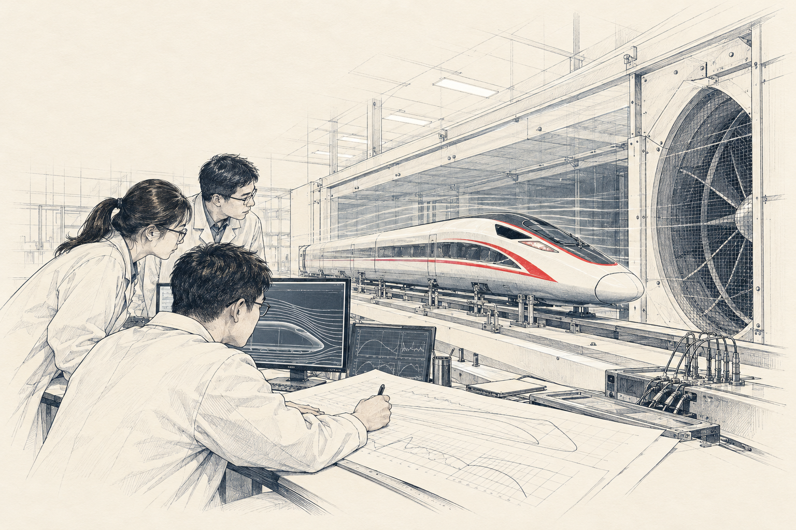

这次结果，能说明什么？
点击选择需要了解的信息，可多选。
攻关如何一步步推进？
让结论有依据，也有边界
从具体问题出发，保留条件与证据；通过反复验证，让不同专业能够共同使用结果。
项目 02 · 高铁速度背后的技术攻关精神
自主练习，不保存作答内容。
自主练习，不保存作答内容。
一项模型试验结果不错，可以马上推广到所有条件吗？

教学模拟情境 · 插画为课程素材，不指代具体试验
点击选择需要了解的信息，可多选。
从具体问题出发，保留条件与证据；通过反复验证，让不同专业能够共同使用结果。